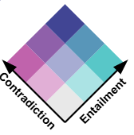

Select a document on the "source" side and click "load" to display it on the left.
Each circle on the right represents a document in the corpus, arranged according to their semantic proximity to each other.
When a source document is loaded the target documents will color according to their average level of contradiction and entailment with that document.
Click on a related document from the "target" side to highlight related sentences between the two.
Scroll or click a sentence in either column to reveal related sentences. Bold or colored highlighting indicate the presence of a relationship.
Related sentences will be highlighted according to the following schema:
contradiction: the target sentence cannot be true given the source sentence
entailment: the source sentence logically leads to the conclusion that the target sentence is true.
neutrality: the source sentence provides no specific information about whether the target sentence is true or false (indicated by transparency of the highlighting, meaning darker sentences have more information in common)

Note that a single sentence can have both contradiction and entailment at the same time.
Tips: Click a highlighted sentence to highlight it's relationships. A blue outline marks the focused sentence. Multiple connectors show one‑to‑many links.
Source Document
Select Source
Target Document
{"max_vals": [5.562716484069824, 3.8247616291046143, 4.441835403442383], "min_vals": [-3.873185157775879, -3.7537598609924316, -1.597365379333496], "documents": [{"id": "1ff91a381558483c9054af383c62d76b", "title": "Campus Police Review Evidence: Wuf's motive is unclear", "paragraphs": [[{"id": "1ff91a381558483c9054af383c62d76b-0", "text": "As the investigation into the Granny's disappearance and encounter with Mr. Wuf continues, campus police are reviewing evidence to determine whether the wolf was truly malicious. \n\n", "targets": {"1b70f1953eda43e4bdd43f3ad9887119-3": [-0.8490864038467407, -2.546353816986084, 4.28855037689209], "1b70f1953eda43e4bdd43f3ad9887119-4": [1.1888723373413086, -3.0062460899353027, 3.000576972961426], "1b70f1953eda43e4bdd43f3ad9887119-7": [0.25774556398391724, -2.0250861644744873, 2.9142909049987793], "3dfe14572a73438a9180acad02945505-1": [-2.37688946723938, -1.1315832138061523, 4.130483627319336], "3dfe14572a73438a9180acad02945505-6": [-0.7223267555236816, -2.464111804962158, 4.156243801116943]}}, {"id": "1ff91a381558483c9054af383c62d76b-1", "text": "\"We arrived for dinner at 6:00 o'clock,\" said Ms. Riding Hood, granddaughter of the victim, \"but Granny wasn't there.\"", "targets": {"2bd584b9e87b41ceb1708c2a8c39ddb5-5": [0.6880558133125305, -2.5815906524658203, 3.0699102878570557], "2bd584b9e87b41ceb1708c2a8c39ddb5-10": [-1.11742103099823, -2.4632935523986816, 4.355958461761475], "1576e5e231ff491bb685f0266e7442b6-0": [2.5221805572509766, -3.5101890563964844, 2.1613945960998535], "1576e5e231ff491bb685f0266e7442b6-2": [1.5377044677734375, -3.3757848739624023, 3.017561674118042], "1576e5e231ff491bb685f0266e7442b6-5": [0.9344538450241089, -2.998723030090332, 3.224846839904785], "d753bba4903348a4ae76922b0cf24cc5-1": [1.162959098815918, -3.179098606109619, 3.1697335243225098], "1b70f1953eda43e4bdd43f3ad9887119-16": [-1.3114526271820068, -0.6019862294197083, 2.79217529296875], "1b70f1953eda43e4bdd43f3ad9887119-18": [3.390730381011963, -2.4591541290283203, -0.2837865650653839]}}, {"id": "1ff91a381558483c9054af383c62d76b-2", "text": "According the aggrieved girl, Mr. Wuf was the only one inside the house, allegedly dropping off last minute groceries for the party.", "targets": {"2bd584b9e87b41ceb1708c2a8c39ddb5-0": [2.3303349018096924, -2.729311466217041, 1.4718050956726074], "2bd584b9e87b41ceb1708c2a8c39ddb5-4": [1.6864508390426636, -3.1459712982177734, 2.6518747806549072], "1576e5e231ff491bb685f0266e7442b6-1": [3.8367505073547363, -3.287104368209839, 0.43655043840408325], "1b70f1953eda43e4bdd43f3ad9887119-5": [1.0616592168807983, -2.612107276916504, 2.7071757316589355], "1b70f1953eda43e4bdd43f3ad9887119-6": [4.89198637008667, -3.6311771869659424, -0.2424764335155487], "3dfe14572a73438a9180acad02945505-2": [3.1906776428222656, -3.254795551300049, 1.1697427034378052]}}, {"id": "1ff91a381558483c9054af383c62d76b-3", "text": "\"\n\nMr. Wuf declined to comment and is in police custody.", "targets": {"2bd584b9e87b41ceb1708c2a8c39ddb5-0": [4.600613117218018, -3.4623682498931885, -0.21241939067840576], "2bd584b9e87b41ceb1708c2a8c39ddb5-4": [3.2679190635681152, -3.706040382385254, 1.6587510108947754], "1576e5e231ff491bb685f0266e7442b6-1": [2.1781086921691895, -3.559317111968994, 2.5832018852233887], "1b70f1953eda43e4bdd43f3ad9887119-5": [-0.2632571756839752, -2.664693593978882, 4.003403663635254], "1b70f1953eda43e4bdd43f3ad9887119-6": [1.2396278381347656, -3.3225347995758057, 3.2751564979553223], "3dfe14572a73438a9180acad02945505-2": [1.101839303970337, -2.6666929721832275, 2.676685333251953]}}, {"id": "1ff91a381558483c9054af383c62d76b-4", "text": "\"I don't know what to think,\" Hood said, in shock.", "targets": {}}, {"id": "1ff91a381558483c9054af383c62d76b-5", "text": "Wolf foot prints and fresh blue graffiti letters \"BBWS\" were found on the house. \n", "targets": {"3dfe14572a73438a9180acad02945505-3": [-1.231309413909912, -2.4612927436828613, 4.356764316558838], "1646ec05a19d4d418d87aa5117fdcc8d-1": [-0.7374330759048462, -1.6461877822875977, 3.4130992889404297], "fae252d74cae432395fad8b33ac5a202-2": [-0.09250256419181824, -2.4612879753112793, 3.652669906616211]}}, {"id": "1ff91a381558483c9054af383c62d76b-6", "text": "\"We're looking at all aspects of the incident,\" said Captain James Parker of NC State University Police in an interview with this reporter.", "targets": {"fa6664a263174dffa8b469f7302b7911-1": [-0.07730957120656967, -2.1778018474578857, 3.411332607269287], "acc98af85dc54537be11ffa0cf72adc8-1": [-3.4753127098083496, 1.5290436744689941, 2.009777545928955]}}, {"id": "1ff91a381558483c9054af383c62d76b-7", "text": "\"It's possible that there were miscommunications or misunderstandings.\"", "targets": {"1646ec05a19d4d418d87aa5117fdcc8d-3": [-1.2104719877243042, -1.2863175868988037, 3.4469807147979736]}}]], "umap": [20.184791564941406, 4.697080135345459]}, {"id": "2bd584b9e87b41ceb1708c2a8c39ddb5", "title": "Ms Wuf Speaks Out: \"Bring my Wuf Home\"", "paragraphs": [[{"id": "2bd584b9e87b41ceb1708c2a8c39ddb5-0", "text": "In an exclusive interview, Ms. Wuf spoke out in support of Mr. Wuf. \n\n", "targets": {"1ff91a381558483c9054af383c62d76b-2": [2.96148943901062, -3.7201476097106934, 1.935150146484375], "1ff91a381558483c9054af383c62d76b-3": [5.488102912902832, -3.0485739707946777, -1.52665114402771], "1576e5e231ff491bb685f0266e7442b6-1": [-1.0546475648880005, -2.473287582397461, 4.337593078613281], "1b70f1953eda43e4bdd43f3ad9887119-5": [0.059453241527080536, -2.3175787925720215, 3.4241809844970703], "1b70f1953eda43e4bdd43f3ad9887119-6": [2.264286518096924, -3.5492734909057617, 2.523085594177246], "3dfe14572a73438a9180acad02945505-2": [0.5672076344490051, -2.4599483013153076, 3.040457248687744]}}, {"id": "2bd584b9e87b41ceb1708c2a8c39ddb5-1", "text": "\"There are other wolves around, these days.", "targets": {}}, {"id": "2bd584b9e87b41ceb1708c2a8c39ddb5-2", "text": "Granny was open-hearted and very trusting.", "targets": {}}, {"id": "2bd584b9e87b41ceb1708c2a8c39ddb5-3", "text": "I don't know who could have done something so terrible, but it wasn't my Wufie.", "targets": {"3dfe14572a73438a9180acad02945505-4": [1.5194393396377563, -2.87282133102417, 2.5020346641540527]}}, {"id": "2bd584b9e87b41ceb1708c2a8c39ddb5-4", "text": "\"\n\nA rally to free Mr. Wuf, organized by Little Red Riding Hood, is planned for 3:00pm at Hunt Library tomorrow.", "targets": {"1ff91a381558483c9054af383c62d76b-2": [1.6715667247772217, -3.291649341583252, 2.8483662605285645], "1ff91a381558483c9054af383c62d76b-3": [4.661370277404785, -3.243229389190674, -0.6033806800842285], "1576e5e231ff491bb685f0266e7442b6-1": [-0.10985953360795975, -2.691791534423828, 3.9087090492248535], "1b70f1953eda43e4bdd43f3ad9887119-5": [-0.05364115536212921, -2.2950713634490967, 3.500526189804077], "1b70f1953eda43e4bdd43f3ad9887119-6": [1.1680333614349365, -3.1989989280700684, 3.251692771911621], "3dfe14572a73438a9180acad02945505-2": [1.697300910949707, -2.692660331726074, 2.0912580490112305]}}, {"id": "2bd584b9e87b41ceb1708c2a8c39ddb5-5", "text": "A former NC State student planning to attend the Rally said, \"I don't trust Granny.", "targets": {"1ff91a381558483c9054af383c62d76b-1": [2.582921266555786, -3.347897529602051, 1.9539012908935547], "1576e5e231ff491bb685f0266e7442b6-0": [0.8194703459739685, -2.81083083152771, 3.1559624671936035], "1576e5e231ff491bb685f0266e7442b6-2": [0.9088082313537598, -3.0008788108825684, 3.2623581886291504], "1576e5e231ff491bb685f0266e7442b6-5": [3.07882022857666, -3.3648555278778076, 1.4589370489120483], "d753bba4903348a4ae76922b0cf24cc5-1": [-0.25778651237487793, -2.349055290222168, 3.6780519485473633], "1b70f1953eda43e4bdd43f3ad9887119-16": [0.33457231521606445, -2.997499942779541, 3.7865426540374756], "1b70f1953eda43e4bdd43f3ad9887119-18": [3.733600616455078, -2.805551052093506, -0.18690963089466095]}}, {"id": "2bd584b9e87b41ceb1708c2a8c39ddb5-6", "text": "Folks say she had ties to the Big Bad Wolf Syndicate.", "targets": {"1b70f1953eda43e4bdd43f3ad9887119-1": [-1.357607364654541, -1.2455509901046753, 3.5531489849090576], "1b70f1953eda43e4bdd43f3ad9887119-10": [-0.8282430171966553, -2.632016181945801, 4.304248809814453], "3dfe14572a73438a9180acad02945505-7": [-0.8865253925323486, -2.5992026329040527, 4.308889865875244]}}, {"id": "2bd584b9e87b41ceb1708c2a8c39ddb5-7", "text": "Rumor has it she was intimate with one of their gang leaders.", "targets": {"1b70f1953eda43e4bdd43f3ad9887119-1": [-1.3545944690704346, -1.1744585037231445, 3.475111722946167], "1b70f1953eda43e4bdd43f3ad9887119-10": [-0.4123048186302185, -2.759204387664795, 4.164154529571533], "3dfe14572a73438a9180acad02945505-7": [0.3885166645050049, -2.743778705596924, 3.552283763885498]}}, {"id": "2bd584b9e87b41ceb1708c2a8c39ddb5-8", "text": "I can\u2019t say who", "targets": {}}, {"id": "2bd584b9e87b41ceb1708c2a8c39ddb5-9", "text": "but I know he was hairy.", "targets": {}}, {"id": "2bd584b9e87b41ceb1708c2a8c39ddb5-10", "text": "It was before Granny came here when she lived in Minnesota.", "targets": {"1ff91a381558483c9054af383c62d76b-1": [0.2286703884601593, -2.988662004470825, 3.865370750427246], "1576e5e231ff491bb685f0266e7442b6-0": [0.8940855860710144, -3.2967123985290527, 3.556234359741211], "1576e5e231ff491bb685f0266e7442b6-2": [-0.9957562685012817, -2.562839984893799, 4.320813179016113], "1576e5e231ff491bb685f0266e7442b6-5": [-0.4966573417186737, -2.7764105796813965, 4.199244499206543], "d753bba4903348a4ae76922b0cf24cc5-1": [-0.9582031965255737, -2.5765764713287354, 4.329293251037598], "1b70f1953eda43e4bdd43f3ad9887119-16": [0.1645442098379135, -3.0595221519470215, 3.942363739013672], "1b70f1953eda43e4bdd43f3ad9887119-18": [3.6160225868225098, -2.982086181640625, 0.2129933387041092]}}, {"id": "2bd584b9e87b41ceb1708c2a8c39ddb5-11", "text": "Mr. Wuf would never do this.", "targets": {}}, {"id": "2bd584b9e87b41ceb1708c2a8c39ddb5-12", "text": "I'm sure of it.", "targets": {}}, {"id": "2bd584b9e87b41ceb1708c2a8c39ddb5-13", "text": "I hope we can bring him home and the police can find the real culprit.\"", "targets": {"e747b505197b425c87b8b0b62781ff9f-3": [0.5544983744621277, -2.1691410541534424, 2.721957206726074], "fae252d74cae432395fad8b33ac5a202-3": [-0.8313294053077698, -0.5888559818267822, 2.2965164184570312]}}, {"id": "2bd584b9e87b41ceb1708c2a8c39ddb5-14", "text": "Parking for the event will be available in the Hunt Library deck.", "targets": {"acc98af85dc54537be11ffa0cf72adc8-3": [-0.7352867722511292, -2.7030389308929443, 4.257144451141357], "5bfbac9f177549418facae11f8ee8fa7-10": [-0.8517444729804993, -2.4064507484436035, 4.166393280029297]}}]], "umap": [19.160505294799805, 4.963152885437012]}, {"id": "e747b505197b425c87b8b0b62781ff9f", "title": "Forest Dweller Sighting Confirmed: Campus Police Warn of Increased Vigilance", "paragraphs": [[{"id": "e747b505197b425c87b8b0b62781ff9f-0", "text": "Campus police have confirmed that a forest dweller, possibly a wolf, was spotted lurking around Jordan Hall and the Hunt Library building earlier today.", "targets": {"fa6664a263174dffa8b469f7302b7911-0": [-3.5063815116882324, 2.99231219291687, 0.04864715784788132], "acc98af85dc54537be11ffa0cf72adc8-0": [-2.8071634769439697, -1.2062768936157227, 4.377046585083008]}}, {"id": "e747b505197b425c87b8b0b62781ff9f-1", "text": "Reports claim that the suspicious character was holding a basketball.\n\n", "targets": {"1b70f1953eda43e4bdd43f3ad9887119-17": [2.541637897491455, -2.733107566833496, 1.2372950315475464], "3dfe14572a73438a9180acad02945505-0": [-0.38687607645988464, -2.41497802734375, 3.84163761138916], "cc671a687803422cac93fe41d4eea01d-36": [-0.8503285646438599, -0.8261610865592957, 2.591400146484375]}}, {"id": "e747b505197b425c87b8b0b62781ff9f-2", "text": "\"We urge all students to exercise increased vigilance when walking alone,\" said Captain James Parker of NC State University Police in an interview with this reporter.", "targets": {"cc671a687803422cac93fe41d4eea01d-17": [0.8665026426315308, -2.7488043308258057, 3.0401439666748047], "cc671a687803422cac93fe41d4eea01d-19": [-1.5411012172698975, -2.251215696334839, 4.431711196899414], "cc671a687803422cac93fe41d4eea01d-20": [0.8977811336517334, -2.430661201477051, 2.6355714797973633], "cc671a687803422cac93fe41d4eea01d-21": [-0.8990062475204468, -2.621706008911133, 4.303038597106934], "cc671a687803422cac93fe41d4eea01d-24": [0.36571234464645386, -2.79293155670166, 3.5559139251708984]}}, {"id": "e747b505197b425c87b8b0b62781ff9f-3", "text": "\"We will do everything in our power to keep you safe.\"", "targets": {"2bd584b9e87b41ceb1708c2a8c39ddb5-13": [0.2392846792936325, -2.8945324420928955, 3.8099968433380127], "fae252d74cae432395fad8b33ac5a202-3": [-1.7629553079605103, -1.1792547702789307, 3.781710624694824]}}]], "umap": [20.537063598632812, 5.855294227600098]}, {"id": "1576e5e231ff491bb685f0266e7442b6", "title": "Granny Reveals Secret Plans for Jordan Hall", "paragraphs": [[{"id": "1576e5e231ff491bb685f0266e7442b6-0", "text": "In a shocking revelation, Granny has confirmed that she was secretly planning to host an underground dinner party at Jordan Hall, near Hunt Library over the weekend.", "targets": {"1ff91a381558483c9054af383c62d76b-1": [2.593290090560913, -3.3356332778930664, 1.9356414079666138], "2bd584b9e87b41ceb1708c2a8c39ddb5-5": [0.22033990919589996, -2.9925642013549805, 3.86659574508667], "2bd584b9e87b41ceb1708c2a8c39ddb5-10": [0.07179130613803864, -2.715726852416992, 3.788482189178467], "d753bba4903348a4ae76922b0cf24cc5-1": [0.7804187536239624, -2.592585325241089, 2.931626081466675], "1b70f1953eda43e4bdd43f3ad9887119-16": [0.47439447045326233, -2.9871482849121094, 3.6674513816833496], "1b70f1953eda43e4bdd43f3ad9887119-18": [3.2897825241088867, -3.021481513977051, 0.7890393137931824]}}, {"id": "1576e5e231ff491bb685f0266e7442b6-1", "text": "Among other celebrities, Mr. And Ms. Wuf were confirmed guests, according to multiple sources.\n\n", "targets": {"1ff91a381558483c9054af383c62d76b-2": [4.533028602600098, -3.5671558380126953, 0.006574362516403198], "1ff91a381558483c9054af383c62d76b-3": [5.562716484069824, -2.9941189289093018, -1.597365379333496], "2bd584b9e87b41ceb1708c2a8c39ddb5-0": [-0.2926746606826782, -2.4217517375946045, 3.799889326095581], "2bd584b9e87b41ceb1708c2a8c39ddb5-4": [2.7387752532958984, -3.5092873573303223, 1.9763081073760986], "1b70f1953eda43e4bdd43f3ad9887119-5": [1.8797709941864014, -2.8309693336486816, 2.073223114013672], "1b70f1953eda43e4bdd43f3ad9887119-6": [4.784796714782715, -3.685683012008667, -0.06052535027265549], "3dfe14572a73438a9180acad02945505-2": [0.24224291741847992, -2.32481050491333, 3.2296042442321777]}}, {"id": "1576e5e231ff491bb685f0266e7442b6-2", "text": "\"I just wanted to invite friends to the house for a bit,\" said Granny in an interview with a reporter.", "targets": {"1ff91a381558483c9054af383c62d76b-1": [2.6276872158050537, -3.3913540840148926, 1.961951732635498], "2bd584b9e87b41ceb1708c2a8c39ddb5-5": [3.5758628845214844, -3.4145140647888184, 0.9274570345878601], "2bd584b9e87b41ceb1708c2a8c39ddb5-10": [-0.1223805844783783, -2.4882779121398926, 3.7356491088867188], "d753bba4903348a4ae76922b0cf24cc5-1": [-1.3640313148498535, -1.7065922021865845, 3.9471805095672607], "1b70f1953eda43e4bdd43f3ad9887119-16": [1.5166816711425781, -3.053652286529541, 2.686067581176758], "1b70f1953eda43e4bdd43f3ad9887119-18": [3.2635512351989746, -2.677873134613037, 0.25244513154029846]}}, {"id": "1576e5e231ff491bb685f0266e7442b6-3", "text": "\"But these are private citizens.", "targets": {}}, {"id": "1576e5e231ff491bb685f0266e7442b6-4", "text": "I hope we can eat and enjoy our evening in peace.\"", "targets": {}}, {"id": "1576e5e231ff491bb685f0266e7442b6-5", "text": "Granny is known for her welcoming attitude and friendships with sports team mascots.", "targets": {"1ff91a381558483c9054af383c62d76b-1": [3.7192113399505615, -3.3988070487976074, 0.7707443833351135], "2bd584b9e87b41ceb1708c2a8c39ddb5-5": [3.0653553009033203, -3.5887088775634766, 1.7308127880096436], "2bd584b9e87b41ceb1708c2a8c39ddb5-10": [-0.9913632869720459, -2.3570809364318848, 4.2574920654296875], "d753bba4903348a4ae76922b0cf24cc5-1": [0.826365053653717, -3.072843313217163, 3.4236326217651367], "1b70f1953eda43e4bdd43f3ad9887119-16": [1.472232699394226, -3.439446210861206, 3.1687850952148438], "1b70f1953eda43e4bdd43f3ad9887119-18": [1.673067569732666, -2.6954355239868164, 2.15960431098938]}}]], "umap": [19.487369537353516, 4.380882740020752]}, {"id": "fa6664a263174dffa8b469f7302b7911", "title": "Campus Police Investigate Suspicious Activity Near Hunt Library", "paragraphs": [[{"id": "fa6664a263174dffa8b469f7302b7911-0", "text": "A suspicious character was spotted lurking around the perimeter of the Hunt Library building earlier today, according to campus police.\n\n", "targets": {"e747b505197b425c87b8b0b62781ff9f-0": [-1.4953721761703491, -1.9632922410964966, 4.269532203674316], "acc98af85dc54537be11ffa0cf72adc8-0": [-2.5681545734405518, -1.3151652812957764, 4.348573684692383]}}, {"id": "fa6664a263174dffa8b469f7302b7911-1", "text": "\"We take all threats seriously,\" said Captain James Parker of NC State University Police in an interview with this reporter.", "targets": {"1ff91a381558483c9054af383c62d76b-6": [-2.74479603767395, 1.3204129934310913, 1.648128867149353], "acc98af85dc54537be11ffa0cf72adc8-1": [-2.608607053756714, 2.742968797683716, -0.6014397144317627]}}, {"id": "fa6664a263174dffa8b469f7302b7911-2", "text": "\"We are investigating the incident and will provide updates as more information becomes available.\"", "targets": {"acc98af85dc54537be11ffa0cf72adc8-2": [-3.3874237537384033, 3.8247616291046143, -1.253248691558838]}}]], "umap": [21.42867088317871, 5.910961151123047]}, {"id": "d753bba4903348a4ae76922b0cf24cc5", "title": "Little Red Riding Hood Visits ailing Granny at Betsy Jordan Hall", "paragraphs": [[{"id": "d753bba4903348a4ae76922b0cf24cc5-0", "text": "Little Red Riding Hood visited her ailing grandmother at Betsy Jordan Hall earlier today, according to sources close to the family.\n\n", "targets": {"1646ec05a19d4d418d87aa5117fdcc8d-0": [0.7570810914039612, -2.9705772399902344, 3.3770716190338135], "fec6b2f8a47644feb0a6cc337842f7db-0": [1.4213522672653198, -3.1382083892822266, 2.856989860534668], "fec6b2f8a47644feb0a6cc337842f7db-1": [-0.8196598291397095, -2.5490317344665527, 4.2648515701293945]}}, {"id": "d753bba4903348a4ae76922b0cf24cc5-1", "text": "\"I was feeling a bit under the weather,\" said Granny in an interview with this reporter.", "targets": {"1ff91a381558483c9054af383c62d76b-1": [3.438389778137207, -3.3574395179748535, 1.0614908933639526], "2bd584b9e87b41ceb1708c2a8c39ddb5-5": [1.3912779092788696, -3.1242880821228027, 2.9265658855438232], "2bd584b9e87b41ceb1708c2a8c39ddb5-10": [-0.2755461037158966, -2.4914090633392334, 3.8619701862335205], "1576e5e231ff491bb685f0266e7442b6-0": [2.149484634399414, -3.1713318824768066, 2.1804537773132324], "1576e5e231ff491bb685f0266e7442b6-2": [-0.40210041403770447, -2.834242105484009, 4.165460109710693], "1576e5e231ff491bb685f0266e7442b6-5": [1.413369059562683, -3.1439638137817383, 2.9103524684906006], "1b70f1953eda43e4bdd43f3ad9887119-16": [1.3415169715881348, -3.330850601196289, 3.1790714263916016], "1b70f1953eda43e4bdd43f3ad9887119-18": [3.338418483734131, -2.7547948360443115, 0.268239289522171]}}, {"id": "d753bba4903348a4ae76922b0cf24cc5-2", "text": "\"But Little Red Riding Hood's visit really lifted my spirits.\"", "targets": {"1646ec05a19d4d418d87aa5117fdcc8d-0": [3.070737600326538, -3.7537598609924316, 1.899285078048706], "fec6b2f8a47644feb0a6cc337842f7db-0": [1.5533463954925537, -3.3442158699035645, 2.9700424671173096], "fec6b2f8a47644feb0a6cc337842f7db-1": [-0.23938356339931488, -2.6502363681793213, 3.9613466262817383]}}]], "umap": [20.240339279174805, 3.812105417251587]}, {"id": "acc98af85dc54537be11ffa0cf72adc8", "title": "Granny's Disappearance: Campus Police Search Underway", "paragraphs": [[{"id": "acc98af85dc54537be11ffa0cf72adc8-0", "text": "Campus police have confirmed that a forest dweller was spotted lurking around the Hunt Library building on NC State's campus earlier today.\n\n", "targets": {"e747b505197b425c87b8b0b62781ff9f-0": [-1.5756350755691528, -2.2088160514831543, 4.441835403442383], "fa6664a263174dffa8b469f7302b7911-0": [-3.48862624168396, 2.3925974369049072, 0.8709671497344971]}}, {"id": "acc98af85dc54537be11ffa0cf72adc8-1", "text": "\"We are taking this situation very seriously,\" said Captain James Parker of NC State University Police in an interview with this reporter.", "targets": {"1ff91a381558483c9054af383c62d76b-6": [-3.237758159637451, 0.6752146482467651, 2.8737294673919678], "fa6664a263174dffa8b469f7302b7911-1": [-2.2705774307250977, -1.5594983100891113, 4.38858699798584]}}, {"id": "acc98af85dc54537be11ffa0cf72adc8-2", "text": "\"We will provide updates as more information becomes available.\"", "targets": {"fa6664a263174dffa8b469f7302b7911-2": [-2.792487859725952, -1.323751449584961, 4.370493412017822]}}, {"id": "acc98af85dc54537be11ffa0cf72adc8-3", "text": "Parker added that the free community event featuring the Minnesota Timberwolvesfor at Hunt Library would happen as planned, however, a greater security presence will be in place.", "targets": {"2bd584b9e87b41ceb1708c2a8c39ddb5-14": [-0.420926034450531, -0.752480149269104, 2.0769169330596924], "5bfbac9f177549418facae11f8ee8fa7-10": [-0.07664768397808075, -2.519735097885132, 3.7059967517852783]}}]], "umap": [21.003814697265625, 5.507617473602295]}, {"id": "1b70f1953eda43e4bdd43f3ad9887119", "title": "MISSION BRIEF and FACT SHEET: Mr. Wuf and BBWS", "paragraphs": [[{"id": "1b70f1953eda43e4bdd43f3ad9887119-0", "text": "Organization:", "targets": {}}, {"id": "1b70f1953eda43e4bdd43f3ad9887119-1", "text": "The Big Bad Wolf Syndicate (BBWS) is a domestic terrorism group known for nefarious plans and often engages in illegal activities and intimidation including kidnapping of elderly ladies.\n\nLocation: BBWS operates across the United States.\n\n", "targets": {"2bd584b9e87b41ceb1708c2a8c39ddb5-6": [-0.5255192518234253, -1.072110652923584, 2.618034839630127], "2bd584b9e87b41ceb1708c2a8c39ddb5-7": [-0.5122185349464417, -1.9773128032684326, 3.603898525238037], "3dfe14572a73438a9180acad02945505-7": [-0.6215109825134277, -2.2036962509155273, 3.89376163482666]}}, {"id": "1b70f1953eda43e4bdd43f3ad9887119-2", "text": "New mission priority:", "targets": {}}, {"id": "1b70f1953eda43e4bdd43f3ad9887119-3", "text": "Previous activity indicates there may be a growing Syndicate den in Raleigh, NC, somewhere near NC State Campus.", "targets": {"1ff91a381558483c9054af383c62d76b-0": [0.06260190904140472, -2.703016996383667, 3.753671407699585], "3dfe14572a73438a9180acad02945505-1": [-0.6635737419128418, -0.8704619407653809, 2.50115966796875], "3dfe14572a73438a9180acad02945505-6": [-0.5984992384910583, -2.7045302391052246, 4.2354583740234375]}}, {"id": "1b70f1953eda43e4bdd43f3ad9887119-4", "text": "Agents in Minnesota are predicting an imminent attack possible in Raleigh NC.\n\n", "targets": {"1ff91a381558483c9054af383c62d76b-0": [-0.08003409206867218, -2.674187183380127, 3.8537888526916504], "3dfe14572a73438a9180acad02945505-1": [-1.6204980611801147, -1.687249779701233, 4.138208866119385], "3dfe14572a73438a9180acad02945505-6": [0.6122294664382935, -2.5607008934020996, 3.1372265815734863]}}, {"id": "1b70f1953eda43e4bdd43f3ad9887119-5", "text": "Person of interest: Mr. Wuf, NCSU\u2019s mascot, has previous relationships with wolves in the BBWS, but is unclear of his allegiance.", "targets": {"1ff91a381558483c9054af383c62d76b-2": [4.14142370223999, -3.685643196105957, 0.6582348942756653], "1ff91a381558483c9054af383c62d76b-3": [4.739688873291016, -3.417679786682129, -0.4291878044605255], "2bd584b9e87b41ceb1708c2a8c39ddb5-0": [2.6956627368927, -3.302481174468994, 1.7837767601013184], "2bd584b9e87b41ceb1708c2a8c39ddb5-4": [1.6681005954742432, -3.3692259788513184, 2.937828302383423], "1576e5e231ff491bb685f0266e7442b6-1": [0.6718038320541382, -3.0976786613464355, 3.615290641784668], "3dfe14572a73438a9180acad02945505-2": [1.0083346366882324, -2.5580005645751953, 2.665236473083496]}}, {"id": "1b70f1953eda43e4bdd43f3ad9887119-6", "text": "Wuf is currently the prime suspect in a highly public kidnapping of Granny but has been released on bail.\n\n", "targets": {"1ff91a381558483c9054af383c62d76b-2": [4.586431980133057, -3.52500057220459, -0.07310514897108078], "1ff91a381558483c9054af383c62d76b-3": [2.988337516784668, -2.020612955093384, -0.4627217650413513], "2bd584b9e87b41ceb1708c2a8c39ddb5-0": [1.5651957988739014, -3.176894187927246, 2.7726190090179443], "2bd584b9e87b41ceb1708c2a8c39ddb5-4": [1.2049452066421509, -3.3713788986206055, 3.3622074127197266], "1576e5e231ff491bb685f0266e7442b6-1": [1.2425360679626465, -3.2149903774261475, 3.188812732696533], "3dfe14572a73438a9180acad02945505-2": [3.9680519104003906, -3.2700603008270264, 0.2364671379327774]}}, {"id": "1b70f1953eda43e4bdd43f3ad9887119-7", "text": "RFI: Raleigh Police seek info on Mr. Wuf and his connection to the Big Bad Wolf Syndicate in order to decide whether or not to increase their surveillance on him.", "targets": {"1ff91a381558483c9054af383c62d76b-0": [-1.0090558528900146, -1.8970121145248413, 3.8921353816986084], "3dfe14572a73438a9180acad02945505-1": [-1.575446605682373, -2.0195207595825195, 4.35299015045166], "3dfe14572a73438a9180acad02945505-6": [0.5059952735900879, -3.069054126739502, 3.7126357555389404]}}, {"id": "1b70f1953eda43e4bdd43f3ad9887119-8", "text": "They have limited funding, and doing so would put a strain on their resources.\n\n", "targets": {"cc671a687803422cac93fe41d4eea01d-38": [-1.021478533744812, -2.0461044311523438, 3.9761948585510254]}}, {"id": "1b70f1953eda43e4bdd43f3ad9887119-9", "text": "Known Facts:\n\n1.", "targets": {}}, {"id": "1b70f1953eda43e4bdd43f3ad9887119-10", "text": "The Big Bad Wolf Syndicate has its largest criminal den in Minneapolis, Minnesota.\n", "targets": {"2bd584b9e87b41ceb1708c2a8c39ddb5-6": [-1.0904955863952637, -1.3317794799804688, 3.4249072074890137], "2bd584b9e87b41ceb1708c2a8c39ddb5-7": [-0.6737427711486816, -2.5573742389678955, 4.2009711265563965], "3dfe14572a73438a9180acad02945505-7": [-1.1047282218933105, -2.4831581115722656, 4.338130950927734]}}, {"id": "1b70f1953eda43e4bdd43f3ad9887119-11", "text": "2.", "targets": {}}, {"id": "1b70f1953eda43e4bdd43f3ad9887119-12", "text": "Mr. Wuf a medium-sized wolf, married to Mrs. Wuf.", "targets": {}}, {"id": "1b70f1953eda43e4bdd43f3ad9887119-13", "text": "He is the mascot for North Carolina State University, and is required to wear only red clothing due to his employment contract.", "targets": {}}, {"id": "1b70f1953eda43e4bdd43f3ad9887119-14", "text": "He has lived in North Carolina all his life and has no prior criminal activity on his record.\n", "targets": {}}, {"id": "1b70f1953eda43e4bdd43f3ad9887119-15", "text": "3.", "targets": {}}, {"id": "1b70f1953eda43e4bdd43f3ad9887119-16", "text": "Granny disappeared shortly before 6:00pm on the night of her party.", "targets": {"1ff91a381558483c9054af383c62d76b-1": [0.0030218586325645447, -2.1244332790374756, 3.2562994956970215], "2bd584b9e87b41ceb1708c2a8c39ddb5-5": [0.9768177270889282, -3.1156373023986816, 3.317241907119751], "2bd584b9e87b41ceb1708c2a8c39ddb5-10": [-0.14735537767410278, -2.168189287185669, 3.4429574012756348], "1576e5e231ff491bb685f0266e7442b6-0": [2.5155091285705566, -3.462151050567627, 2.139402151107788], "1576e5e231ff491bb685f0266e7442b6-2": [0.3860049247741699, -3.0414860248565674, 3.7914204597473145], "1576e5e231ff491bb685f0266e7442b6-5": [0.486331045627594, -2.653244972229004, 3.3314743041992188], "d753bba4903348a4ae76922b0cf24cc5-1": [-0.39282891154289246, -2.804978132247925, 4.146012783050537]}}, {"id": "1b70f1953eda43e4bdd43f3ad9887119-17", "text": "No evidence of breaking and entering was present at the scene when our police force arrived.\n\n", "targets": {"e747b505197b425c87b8b0b62781ff9f-1": [1.3177601099014282, -2.9107890129089355, 2.7340664863586426], "3dfe14572a73438a9180acad02945505-0": [0.31723731756210327, -2.9895308017730713, 3.776378631591797], "cc671a687803422cac93fe41d4eea01d-36": [-0.8691169023513794, -2.2099125385284424, 4.031448841094971]}}, {"id": "1b70f1953eda43e4bdd43f3ad9887119-18", "text": "Guest list for Granny's Party (CONFIRMED):\nLittle Red Riding Hood\nThe Stanford Tree (Stanford)\nJazz Bear (Utah Jazz)\nCrunch (Minnesota Timberwolves) \n", "targets": {"1ff91a381558483c9054af383c62d76b-1": [4.044377326965332, -3.449396848678589, 0.42149877548217773], "2bd584b9e87b41ceb1708c2a8c39ddb5-5": [3.4341323375701904, -3.6602654457092285, 1.4242488145828247], "2bd584b9e87b41ceb1708c2a8c39ddb5-10": [1.0603811740875244, -2.4209020137786865, 2.491213321685791], "1576e5e231ff491bb685f0266e7442b6-0": [-0.28495049476623535, -2.4098334312438965, 3.7724404335021973], "1576e5e231ff491bb685f0266e7442b6-2": [0.25449949502944946, -2.770456075668335, 3.6117634773254395], "1576e5e231ff491bb685f0266e7442b6-5": [0.11469023674726486, -2.6134021282196045, 3.6330416202545166], "d753bba4903348a4ae76922b0cf24cc5-1": [1.227318525314331, -3.293130874633789, 3.2029404640197754]}}, {"id": "1b70f1953eda43e4bdd43f3ad9887119-19", "text": "Gritty (Philadelphia Flyers)\n", "targets": {}}, {"id": "1b70f1953eda43e4bdd43f3ad9887119-20", "text": "Stormy the Ice Hog (NC Hurricanes)\nTaylor Swift\nTravis Kelce\nOprah Winfrey\nChris Pratt\nKevin Hart\nJeff Goldblum\nDame Judi Dench\nDavid Tennant\nBTS\nKeanu Reeves\nDwayne \"The Rock\" Johnson\nMichelle Yeoh", "targets": {"cc671a687803422cac93fe41d4eea01d-38": [0.3313037157058716, -2.7103464603424072, 3.509948253631592]}}]], "umap": [19.433218002319336, 5.691848278045654]}, {"id": "3dfe14572a73438a9180acad02945505", "title": "New Evidence Emerges: Second Wolf Implicated", "paragraphs": [[{"id": "3dfe14572a73438a9180acad02945505-0", "text": "As the investigation into the disappearance of Granny continues, new evidence has emerged that appears to complicate the matter.", "targets": {"e747b505197b425c87b8b0b62781ff9f-1": [-0.40368762612342834, -2.7688870429992676, 4.154003620147705], "1b70f1953eda43e4bdd43f3ad9887119-17": [3.517695426940918, -3.329860210418701, 0.8995708227157593], "cc671a687803422cac93fe41d4eea01d-36": [-0.037353068590164185, -1.9659755229949951, 3.1069912910461426]}}, {"id": "3dfe14572a73438a9180acad02945505-1", "text": "Reports of another wolf on NC State campus have been circulating throughout the community. \n\n", "targets": {"1ff91a381558483c9054af383c62d76b-0": [-1.007072925567627, -2.5578808784484863, 4.333965301513672], "1b70f1953eda43e4bdd43f3ad9887119-3": [-0.3513043522834778, -1.523999571800232, 2.965282440185547], "1b70f1953eda43e4bdd43f3ad9887119-4": [1.1328105926513672, -2.9629621505737305, 3.003093719482422], "1b70f1953eda43e4bdd43f3ad9887119-7": [0.15909931063652039, -2.692587375640869, 3.681565284729004]}}, {"id": "3dfe14572a73438a9180acad02945505-2", "text": "\"I'm a friend of Mr. Wuf, or Wufie, as I call him,\" said Michael O'Connell, member of the NC State basketball team, \"He wouldn't do anything to hurt Granny.", "targets": {"1ff91a381558483c9054af383c62d76b-2": [1.9313368797302246, -3.156003475189209, 2.3893911838531494], "1ff91a381558483c9054af383c62d76b-3": [5.238679885864258, -3.3518271446228027, -0.9566386342048645], "2bd584b9e87b41ceb1708c2a8c39ddb5-0": [0.6549327969551086, -2.134000301361084, 2.561722755432129], "2bd584b9e87b41ceb1708c2a8c39ddb5-4": [2.9577643871307373, -3.5188026428222656, 1.7575452327728271], "1576e5e231ff491bb685f0266e7442b6-1": [-1.2598901987075806, -2.2406463623046875, 4.328505992889404], "1b70f1953eda43e4bdd43f3ad9887119-5": [-0.12056571990251541, -2.364795446395874, 3.626314640045166], "1b70f1953eda43e4bdd43f3ad9887119-6": [3.5006351470947266, -3.714435577392578, 1.4236763715744019]}}, {"id": "3dfe14572a73438a9180acad02945505-3", "text": "Besides, I'm sure I saw another wolf on my way to class.", "targets": {"1ff91a381558483c9054af383c62d76b-5": [0.4525168240070343, -2.9777822494506836, 3.695650577545166], "1646ec05a19d4d418d87aa5117fdcc8d-1": [-1.6388570070266724, -1.8937909603118896, 4.266168594360352], "fae252d74cae432395fad8b33ac5a202-2": [-0.3355173170566559, -2.7623350620269775, 4.094372749328613]}}, {"id": "3dfe14572a73438a9180acad02945505-4", "text": "Wulfie would never wear blue, and this Wolf, whoever he is, looked like he was repping Duke.", "targets": {"2bd584b9e87b41ceb1708c2a8c39ddb5-3": [-0.9880034923553467, -0.8699783086776733, 2.780923843383789]}}, {"id": "3dfe14572a73438a9180acad02945505-5", "text": "That's just not my Wuf.", "targets": {}}, {"id": "3dfe14572a73438a9180acad02945505-6", "text": "\"\n\nPolice Captain James Parker of NC State University confirmed that they would be reviewing local business and street camera footage for a second wolf that matches O'Connell's description, but encouraged caution while also not jumping to conclusions.", "targets": {"1ff91a381558483c9054af383c62d76b-0": [-1.8397831916809082, -1.2333582639694214, 3.875278949737549], "1b70f1953eda43e4bdd43f3ad9887119-3": [-0.7299256324768066, -2.551588535308838, 4.220137119293213], "1b70f1953eda43e4bdd43f3ad9887119-4": [1.487451434135437, -2.888850212097168, 2.5479907989501953], "1b70f1953eda43e4bdd43f3ad9887119-7": [-0.42348673939704895, -1.6193876266479492, 3.1523139476776123]}}, {"id": "3dfe14572a73438a9180acad02945505-7", "text": "\"Yes, the Big Bad Syndicate is known for human trafficking and similar kidnappings,\" he said, \"but we are monitoring the situation very closely and request the community stay calm and report any unusual behavior.\"", "targets": {"2bd584b9e87b41ceb1708c2a8c39ddb5-6": [0.16768015921115875, -1.413133978843689, 2.24955677986145], "2bd584b9e87b41ceb1708c2a8c39ddb5-7": [-0.18206219375133514, -2.2850840091705322, 3.5998759269714355], "1b70f1953eda43e4bdd43f3ad9887119-1": [-1.2677172422409058, -1.3521268367767334, 3.5975892543792725], "1b70f1953eda43e4bdd43f3ad9887119-10": [-1.0150620937347412, -2.534242630004883, 4.347593784332275]}}]], "umap": [20.08391571044922, 5.324556350708008]}, {"id": "1646ec05a19d4d418d87aa5117fdcc8d", "title": "Little Red Riding Hood's Encounter with a Furry Forest Dweller", "paragraphs": [[{"id": "1646ec05a19d4d418d87aa5117fdcc8d-0", "text": "Little Red Riding Hood's encounter with a suspicious furry character earlier today was nothing short of terrifying, according to eyewitnesses.\n\n", "targets": {"d753bba4903348a4ae76922b0cf24cc5-0": [3.514941930770874, -3.53029727935791, 1.1534396409988403], "d753bba4903348a4ae76922b0cf24cc5-2": [4.461567401885986, -3.4664134979248047, -0.024985723197460175], "fec6b2f8a47644feb0a6cc337842f7db-0": [-1.083117961883545, -2.5212979316711426, 4.352378845214844], "fec6b2f8a47644feb0a6cc337842f7db-1": [-0.8906090259552002, -2.490377902984619, 4.273008823394775]}}, {"id": "1646ec05a19d4d418d87aa5117fdcc8d-1", "text": "\"He was bigger than the wolves I've seen around here,\" said one witness in an interview with this reporter.", "targets": {"1ff91a381558483c9054af383c62d76b-5": [0.2387082874774933, -2.845867156982422, 3.759321689605713], "3dfe14572a73438a9180acad02945505-3": [-1.1892379522323608, -2.4802498817443848, 4.357993125915527], "fae252d74cae432395fad8b33ac5a202-2": [-0.24763812124729156, -2.7709875106811523, 4.048757553100586]}}, {"id": "1646ec05a19d4d418d87aa5117fdcc8d-2", "text": "\"They were shouting.", "targets": {}}, {"id": "1646ec05a19d4d418d87aa5117fdcc8d-3", "text": "It looked like they were fighting about something.\"", "targets": {"1ff91a381558483c9054af383c62d76b-7": [-3.873185157775879, 2.09968638420105, 1.6151694059371948]}}]], "umap": [20.454994201660156, 4.219974040985107]}, {"id": "fec6b2f8a47644feb0a6cc337842f7db", "title": "Little Red Riding Hood Speaks Out on Campus Safety", "paragraphs": [[{"id": "fec6b2f8a47644feb0a6cc337842f7db-0", "text": "Little Red Riding Hood has spoken out about her harrowing encounter on campus, urging students to be vigilant when walking alone near Poulton or on their way to the Laboratory of Analytic Sciences.\n\n", "targets": {"d753bba4903348a4ae76922b0cf24cc5-0": [2.370464563369751, -3.627739429473877, 2.44767689704895], "d753bba4903348a4ae76922b0cf24cc5-2": [2.8486809730529785, -3.4114418029785156, 1.7238428592681885], "1646ec05a19d4d418d87aa5117fdcc8d-0": [-2.3392703533172607, -1.7149405479431152, 4.422121047973633]}}, {"id": "fec6b2f8a47644feb0a6cc337842f7db-1", "text": "\"I just want everyone to be aware of what's going on around them,\" said Little Red Riding Hood in an interview with this reporter.", "targets": {"d753bba4903348a4ae76922b0cf24cc5-0": [0.5856509208679199, -3.2099409103393555, 3.7423553466796875], "d753bba4903348a4ae76922b0cf24cc5-2": [-0.024311959743499756, -2.7903897762298584, 3.879459857940674], "1646ec05a19d4d418d87aa5117fdcc8d-0": [-0.7434451580047607, -2.700218915939331, 4.26559591293335]}}, {"id": "fec6b2f8a47644feb0a6cc337842f7db-2", "text": "\"We need to look out for each other.", "targets": {}}, {"id": "fec6b2f8a47644feb0a6cc337842f7db-3", "text": "Even those we thought we could trust.\"", "targets": {}}]], "umap": [21.14461898803711, 4.109169960021973]}, {"id": "cc671a687803422cac93fe41d4eea01d", "title": "Dueling Column: Sexy? No. Practical? Yes: The reasons Hill Library is better than Hunt", "paragraphs": [[{"id": "cc671a687803422cac93fe41d4eea01d-0", "text": "I\u2019m sure everyone on campus has been to D.H. Hill Jr. Library at least once.", "targets": {}}, {"id": "cc671a687803422cac93fe41d4eea01d-1", "text": "Maybe it was on a tour before you were accepted to NC State, or maybe you\u2019re in there every night, studying until dawn.", "targets": {"fae252d74cae432395fad8b33ac5a202-1": [1.2159088850021362, -3.0006251335144043, 2.938180923461914], "fae252d74cae432395fad8b33ac5a202-5": [1.6510820388793945, -3.3932385444641113, 2.939643621444702], "fae252d74cae432395fad8b33ac5a202-10": [3.0449819564819336, -3.472731590270996, 1.6290175914764404]}}, {"id": "cc671a687803422cac93fe41d4eea01d-2", "text": "Regardless, you know Hill is the go-to, classic NC State library. \n\n", "targets": {}}, {"id": "cc671a687803422cac93fe41d4eea01d-3", "text": "I\u2019d say it\u2019s the best library on campus, but Hunt Library isn\u2019t even on main campus, so there\u2019s not much competition for that title.\n\n", "targets": {}}, {"id": "cc671a687803422cac93fe41d4eea01d-4", "text": "Hill has one of the best places to study and work: the bookstacks.", "targets": {}}, {"id": "cc671a687803422cac93fe41d4eea01d-5", "text": "Head to any of the floors above the third and you\u2019ll find ample, quiet study spaces.", "targets": {}}, {"id": "cc671a687803422cac93fe41d4eea01d-6", "text": "It feels like exactly what you expect when you think of a library.", "targets": {}}, {"id": "cc671a687803422cac93fe41d4eea01d-7", "text": "The bookstacks at Hill are almost whimsical places to work and browse the titles of books you\u2019ll never read.\n\n", "targets": {}}, {"id": "cc671a687803422cac93fe41d4eea01d-8", "text": "Most places to work in Hunt look like a dystopian office space.", "targets": {}}, {"id": "cc671a687803422cac93fe41d4eea01d-9", "text": "Quite a few of the areas in Hunt seem solely designed to place you, and at least a hundred other people, in front of a desk.", "targets": {}}, {"id": "cc671a687803422cac93fe41d4eea01d-10", "text": "While this can also be argued about the base floors of Hill, you\u2019re still surrounded by books, lighting and seating that add color and character, and the spaces of isolation aren\u2019t nearly as big.\n\n", "targets": {}}, {"id": "cc671a687803422cac93fe41d4eea01d-11", "text": "The closest thing you get to the bookstacks at Hunt is the bookBot, i.e., not a study space.", "targets": {}}, {"id": "cc671a687803422cac93fe41d4eea01d-12", "text": "With a name like the bookBot, you might imagine a cute robot that guides you through the library and gently climbs shelves to retrieve your books.", "targets": {}}, {"id": "cc671a687803422cac93fe41d4eea01d-13", "text": "That is not at all the case.\n\n", "targets": {}}, {"id": "cc671a687803422cac93fe41d4eea01d-14", "text": "Imagine an awkward shelf that moves across stacked, book-sized shipping containers.", "targets": {}}, {"id": "cc671a687803422cac93fe41d4eea01d-15", "text": "At least at Hill you can physically find the location of the books you want.\n\n", "targets": {}}, {"id": "cc671a687803422cac93fe41d4eea01d-16", "text": "Not only does Hill have superior study spaces, but it\u2019s also in a more convenient location.", "targets": {}}, {"id": "cc671a687803422cac93fe41d4eea01d-17", "text": "If you live on campus, you probably live on main campus, since Centennial Campus only has four places to live.", "targets": {"e747b505197b425c87b8b0b62781ff9f-2": [-0.3784414529800415, -2.847676992416382, 4.151777267456055]}}, {"id": "cc671a687803422cac93fe41d4eea01d-18", "text": "Maybe you like the idea of feeling stranded in a library that you can\u2019t escape until you finish your work.", "targets": {}}, {"id": "cc671a687803422cac93fe41d4eea01d-19", "text": "But maybe it\u2019s also nice to have one within walking distance from classes and living.\n\n", "targets": {"e747b505197b425c87b8b0b62781ff9f-2": [0.7731194496154785, -3.1110410690307617, 3.4967288970947266]}}, {"id": "cc671a687803422cac93fe41d4eea01d-20", "text": "The furthest place you could live from Hill on main campus is Wolf Village.", "targets": {"e747b505197b425c87b8b0b62781ff9f-2": [-0.5231720209121704, -2.7184982299804688, 4.195199966430664]}}, {"id": "cc671a687803422cac93fe41d4eea01d-21", "text": "While it is about a 20 minute walk, there is a direct Wolfline route that takes 10 minutes.", "targets": {"e747b505197b425c87b8b0b62781ff9f-2": [-0.8585479259490967, -2.6272711753845215, 4.305557727813721]}}, {"id": "cc671a687803422cac93fe41d4eea01d-22", "text": "Still, most students probably live closer.\n\n", "targets": {}}, {"id": "cc671a687803422cac93fe41d4eea01d-23", "text": "Going to Hill also gives you the added benefit of access to Hillsborough Street.", "targets": {}}, {"id": "cc671a687803422cac93fe41d4eea01d-24", "text": "If you need a break from studying, you can walk for five minutes and go get a bite to eat.", "targets": {"e747b505197b425c87b8b0b62781ff9f-2": [2.654554843902588, -3.404963254928589, 1.929105520248413]}}, {"id": "cc671a687803422cac93fe41d4eea01d-25", "text": "If nothing on Hillsborough Street sounds good, you can head down to the Atrium as well.\n\n", "targets": {}}, {"id": "cc671a687803422cac93fe41d4eea01d-26", "text": "Not hungry?", "targets": {}}, {"id": "cc671a687803422cac93fe41d4eea01d-27", "text": "Take a quick walk around the Court of North Carolina or by the Hillsborough side of Kilgore and Scott Hall where all the plants are.\n\n", "targets": {}}, {"id": "cc671a687803422cac93fe41d4eea01d-28", "text": "An especially underrated aspect of Hill is the Exhibit Gallery.", "targets": {}}, {"id": "cc671a687803422cac93fe41d4eea01d-29", "text": "The current exhibit is on women\u2019s history at NC State and the prior was on the 100 year anniversary of Technician.", "targets": {"fae252d74cae432395fad8b33ac5a202-1": [2.024510145187378, -3.363973617553711, 2.5252747535705566], "fae252d74cae432395fad8b33ac5a202-5": [0.9756026864051819, -3.30430269241333, 3.5118484497070312], "fae252d74cae432395fad8b33ac5a202-10": [4.761107444763184, -3.561479091644287, -0.22628231346607208]}}, {"id": "cc671a687803422cac93fe41d4eea01d-30", "text": "While small, the exhibits are always polished and informative.", "targets": {"fae252d74cae432395fad8b33ac5a202-1": [1.066548466682434, -2.9848198890686035, 3.149125576019287], "fae252d74cae432395fad8b33ac5a202-5": [3.1158242225646973, -3.454617738723755, 1.5440208911895752], "fae252d74cae432395fad8b33ac5a202-10": [4.054542541503906, -3.357944965362549, 0.291320264339447]}}, {"id": "cc671a687803422cac93fe41d4eea01d-31", "text": "There\u2019s also a little section where you can sit and see the Brickyard, which is nice when it isn\u2019t plagued by rampant construction.", "targets": {}}, {"id": "cc671a687803422cac93fe41d4eea01d-32", "text": "If you haven\u2019t been, definitely check it out.\n\n", "targets": {}}, {"id": "cc671a687803422cac93fe41d4eea01d-33", "text": "While neither of these libraries are winning the sexiest building on campus title, Hunt doesn\u2019t get points for trying.", "targets": {}}, {"id": "cc671a687803422cac93fe41d4eea01d-34", "text": "Hill is a brick tower, but the view from Hillsborough Street offers a nice preview of the building and fills out the lawn space with tables and chairs.", "targets": {}}, {"id": "cc671a687803422cac93fe41d4eea01d-35", "text": "Hunt looks like tacky aliens landed their ship there and the architects made it work.", "targets": {}}, {"id": "cc671a687803422cac93fe41d4eea01d-36", "text": "It feels like it\u2019s supposed to look like something, though I\u2019m not sure what.\n\n", "targets": {"e747b505197b425c87b8b0b62781ff9f-1": [0.8999648094177246, -2.777254104614258, 3.042912483215332], "1b70f1953eda43e4bdd43f3ad9887119-17": [1.4788762331008911, -2.6685755252838135, 2.3081531524658203], "3dfe14572a73438a9180acad02945505-0": [-1.095337152481079, -2.496458053588867, 4.358100891113281]}}, {"id": "cc671a687803422cac93fe41d4eea01d-37", "text": "It feels like Hunt wants to be the cornerstone library of NC State.", "targets": {}}, {"id": "cc671a687803422cac93fe41d4eea01d-38", "text": "In reality, it\u2019s the new kid on the block, and it\u2019s trying way too hard.", "targets": {"1b70f1953eda43e4bdd43f3ad9887119-8": [-2.7807178497314453, -1.1484167575836182, 4.319083213806152], "1b70f1953eda43e4bdd43f3ad9887119-20": [3.6663119792938232, -3.0210378170013428, 0.24559222161769867]}}, {"id": "cc671a687803422cac93fe41d4eea01d-39", "text": "Hill is a classic, widely accessible library that has stood the test of time.", "targets": {}}, {"id": "cc671a687803422cac93fe41d4eea01d-40", "text": "Hill Library has earned its title of Best Library.", "targets": {}}]], "umap": [21.20741844177246, 4.941611289978027]}, {"id": "5bfbac9f177549418facae11f8ee8fa7", "title": "Raleigh Welcomes the Timberwolves", "paragraphs": [[{"id": "5bfbac9f177549418facae11f8ee8fa7-0", "text": "The City of Raleigh is thrilled to welcome the Minnesota Timberwolves (NBA) as they bring their exciting brand of basketball to our capital city!", "targets": {}}, {"id": "5bfbac9f177549418facae11f8ee8fa7-1", "text": "In a special fundraising tournament, the Timberwolves will face off against local rivals and opponents from around the country in a thrilling showcase of hoops.\n\n", "targets": {}}, {"id": "5bfbac9f177549418facae11f8ee8fa7-2", "text": "\"We are beyond honored to have the Minnesota Timberwolves come to Raleigh,\" said Mayor Pro Tem, Sarah Johnson.", "targets": {}}, {"id": "5bfbac9f177549418facae11f8ee8fa7-3", "text": "\"This is an incredible opportunity for our community to experience top-level basketball while supporting a great cause.", "targets": {}}, {"id": "5bfbac9f177549418facae11f8ee8fa7-4", "text": "\"\n\nThe tournament, dubbed \"Triangle Thermal Explosion,\" will take place on July 8-10 at PNC Arena in downtown Raleigh.", "targets": {"fae252d74cae432395fad8b33ac5a202-4": [-1.5387089252471924, -2.2615365982055664, 4.423386573791504]}}, {"id": "5bfbac9f177549418facae11f8ee8fa7-5", "text": "The event promises to be an electrifying experience for fans of all ages, with the Timberwolves facing off against teams from around the country and a special game against the NC State Men's Basketball team, the Wolfpack.\n\n", "targets": {}}, {"id": "5bfbac9f177549418facae11f8ee8fa7-6", "text": "\"We're excited to bring our brand of basketball to Raleigh and give back to the community through this special fundraising tournament,\" said Tim Connelly, President of Basketball Operations for the Minnesota Timberwolves.", "targets": {}}, {"id": "5bfbac9f177549418facae11f8ee8fa7-7", "text": "\"Our team is passionate about engaging with fans and supporting local charities, and we can't wait to get started.", "targets": {}}, {"id": "5bfbac9f177549418facae11f8ee8fa7-8", "text": "\"\n\nThe Timberwolves will play against a series of opponents in a unique format that combines friendly competition with community outreach.", "targets": {}}, {"id": "5bfbac9f177549418facae11f8ee8fa7-9", "text": "The tournament's proceeds will benefit local organizations focused on youth education, health initiatives, and family support.", "targets": {}}, {"id": "5bfbac9f177549418facae11f8ee8fa7-10", "text": "As part of that effort, the team will host a free event for the community at Hunt Library on NC State's campus.\n\n", "targets": {"2bd584b9e87b41ceb1708c2a8c39ddb5-14": [0.4767577052116394, -1.5603032112121582, 2.0414490699768066], "acc98af85dc54537be11ffa0cf72adc8-3": [-0.44276320934295654, -2.8215606212615967, 4.167438507080078]}}, {"id": "5bfbac9f177549418facae11f8ee8fa7-11", "text": "\"We're looking forward to an incredible event that brings together the best basketball teams from around the country,\" added Connelly.", "targets": {}}, {"id": "5bfbac9f177549418facae11f8ee8fa7-12", "text": "\"Our fans can expect high-flying action, exciting matchups, hilarious antics from their favorite mascot, Crunch the Wolf, and a chance to give back to the community.", "targets": {}}, {"id": "5bfbac9f177549418facae11f8ee8fa7-13", "text": "\"\n\nThe Twin Cities Thermal Explosion is presented by Rockfish Research and is made possible through the support of PNC Arena.", "targets": {"fae252d74cae432395fad8b33ac5a202-4": [-1.337565541267395, -2.397857904434204, 4.385209083557129]}}]], "umap": [19.958097457885742, 6.426138877868652]}, {"id": "fae252d74cae432395fad8b33ac5a202", "title": "NC State men\u2019s basketball head coach Kevin Keatts will not return", "paragraphs": [[{"id": "fae252d74cae432395fad8b33ac5a202-0", "text": "NC State Athletics announced in a press release Sunday that men\u2019s basketball head coach Kevin Keatts will not return, effective immediately, after eight seasons with the Wolfpack.\n\n", "targets": {}}, {"id": "fae252d74cae432395fad8b33ac5a202-1", "text": "\u201cI want to thank Coach Keatts for his contributions to NC State and for always representing the university with class,\u201d said Director of Athletics Boo Corrigan.", "targets": {"cc671a687803422cac93fe41d4eea01d-1": [-0.8173924684524536, -2.614372968673706, 4.276132583618164], "cc671a687803422cac93fe41d4eea01d-29": [1.0970001220703125, -3.2395901679992676, 3.3394885063171387], "cc671a687803422cac93fe41d4eea01d-30": [-1.5070562362670898, -1.9145328998565674, 4.229229927062988]}}, {"id": "fae252d74cae432395fad8b33ac5a202-2", "text": "\u201cHe will always have a treasured place in Wolfpack history for the accomplishments of his 2023-24 squad and I appreciate the passion he brought to this role.", "targets": {"1ff91a381558483c9054af383c62d76b-5": [-0.16889724135398865, -2.1902661323547363, 3.526085376739502], "3dfe14572a73438a9180acad02945505-3": [-1.088896632194519, -2.526827335357666, 4.326801300048828], "1646ec05a19d4d418d87aa5117fdcc8d-1": [-1.826515793800354, -1.8103971481323242, 4.323863983154297]}}, {"id": "fae252d74cae432395fad8b33ac5a202-3", "text": "We wish him and his family the best in the future.\u201d\n\n", "targets": {"2bd584b9e87b41ceb1708c2a8c39ddb5-13": [-0.5721344947814941, -2.485574722290039, 4.068714618682861], "e747b505197b425c87b8b0b62781ff9f-3": [-1.2264841794967651, -1.9231843948364258, 4.064959526062012]}}, {"id": "fae252d74cae432395fad8b33ac5a202-4", "text": "It\u2019s an unprecedented move after an unprecedented season.", "targets": {"5bfbac9f177549418facae11f8ee8fa7-4": [0.35139989852905273, -3.004904270172119, 3.7864339351654053], "5bfbac9f177549418facae11f8ee8fa7-13": [0.03945484012365341, -2.9000024795532227, 3.9357738494873047]}}, {"id": "fae252d74cae432395fad8b33ac5a202-5", "text": "NC State is the first team in NCAA history to miss its conference tournament after winning it and making the Final Four the year before.\n\n", "targets": {"cc671a687803422cac93fe41d4eea01d-1": [-0.4302690029144287, -2.808537006378174, 4.166432857513428], "cc671a687803422cac93fe41d4eea01d-29": [0.8384692072868347, -2.9120891094207764, 3.274163246154785], "cc671a687803422cac93fe41d4eea01d-30": [-0.21535724401474, -2.5848147869110107, 3.876903772354126]}}, {"id": "fae252d74cae432395fad8b33ac5a202-6", "text": "Keatts joined the Wolfpack in 2017 after back-to-back seasons leading UNC-Wilmington to the NCAA Tournament.", "targets": {}}, {"id": "fae252d74cae432395fad8b33ac5a202-7", "text": "In his time with the Wolfpack, Keatts had an all-time record of 151-113, a conference record of 69-84, one conference championship and three NCAA Tournament appearances, including last season\u2019s miracle Final Four run.\n\n", "targets": {}}, {"id": "fae252d74cae432395fad8b33ac5a202-8", "text": "The Wolfpack failed to build on last season\u2019s success, finishing with a 12-19 record and tying the program\u2019s longest losing streak after nine-straight losses.", "targets": {}}, {"id": "fae252d74cae432395fad8b33ac5a202-9", "text": "Twice in the last four seasons, Keatts\u2019 teams have recorded win totals of 12 and 11.\n\n", "targets": {}}, {"id": "fae252d74cae432395fad8b33ac5a202-10", "text": "The press release announcing Keatts\u2019 dismissal said a national search for NC State\u2019s next head coach will begin immediately.", "targets": {"cc671a687803422cac93fe41d4eea01d-1": [-0.024406984448432922, -2.925220251083374, 3.9809341430664062], "cc671a687803422cac93fe41d4eea01d-29": [2.444204568862915, -3.314950942993164, 2.0565803050994873], "cc671a687803422cac93fe41d4eea01d-30": [0.5691508650779724, -2.2078776359558105, 2.8398287296295166]}}]], "umap": [20.54359245300293, 6.586982727050781]}]}